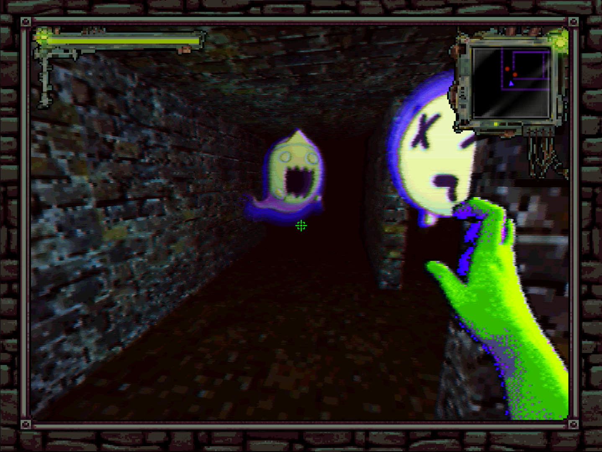
GAMES

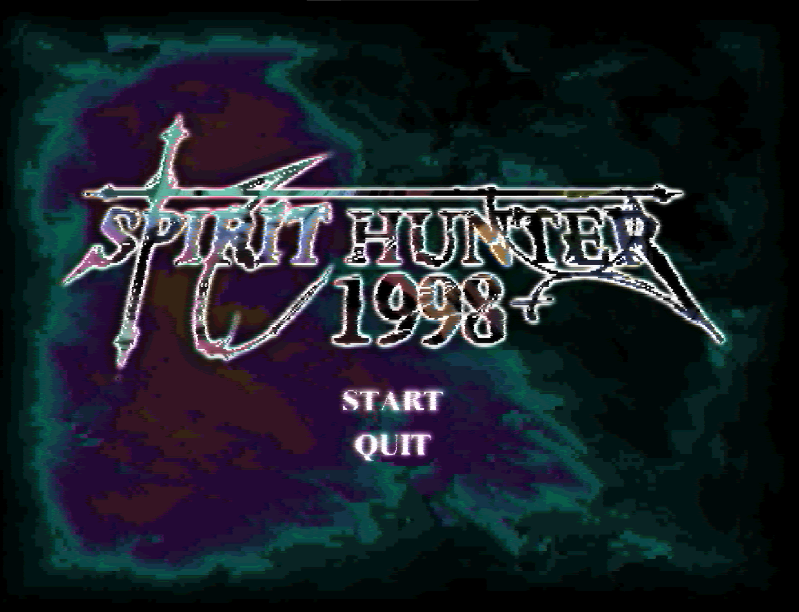
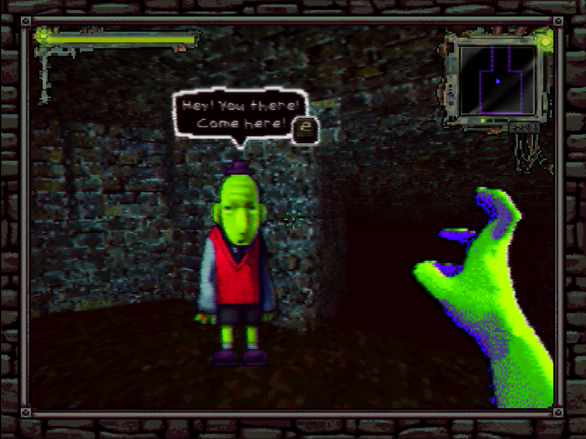
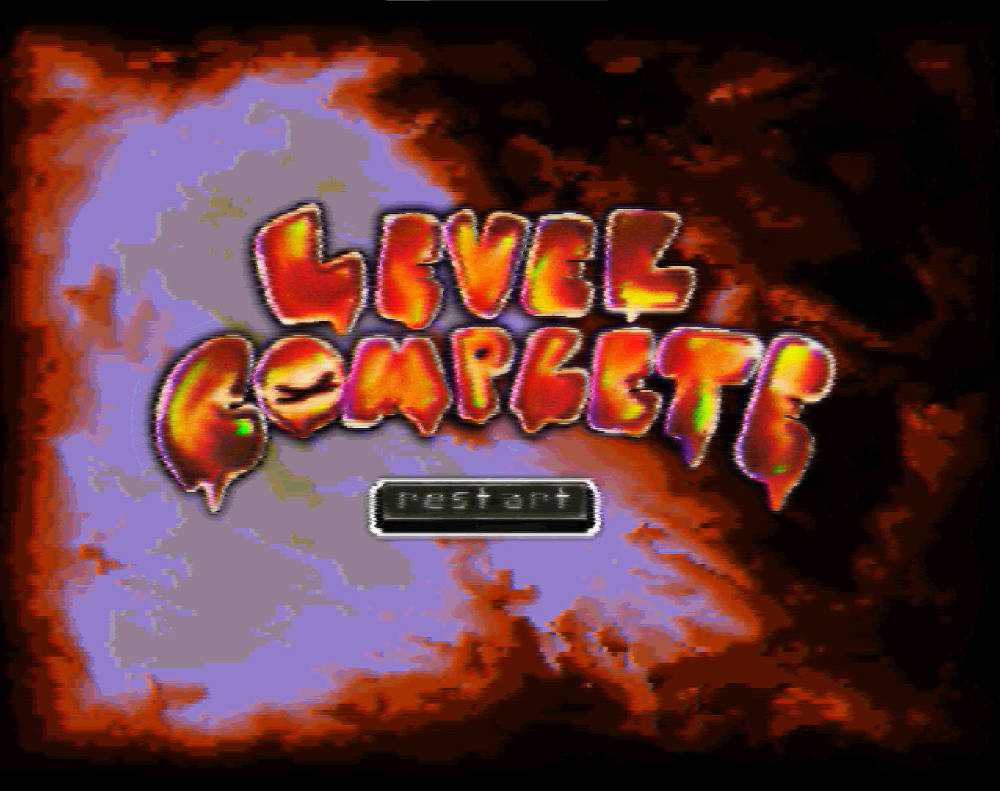
I collaborated with a group of people to create a Godot engine game called, “Spirit Hunter 1998”, I handled the majority of the technical and a lot of the visuals in the game. I designed many of the 3D assets using Procreate, where I focused on creating a consistent “retro” visual identity through things like the UI, title screens, and a functional minimap. On the programming side, I wrote the GDScript necessary to integrate these elements along with all other coding needed for gameplay. This involved coding the core logic for things like enemy behavior and world int`eractions such as combat and dialogue systems. For instance, I implemented a navigation system for the enemy’s to find the shortest distance to the player on the map and take that path. To add to the retro aesthetic we were going for, I built all the levels using Trenchbroom so the game could have an authentic quake-engine feel. I also managed the implementation of all sound effects to ensure the atmosphere was as immersive as possible. The main thing I wanted out of this project was to create a game with a unique visual and technical identity. At the same time, It was my first time creating a fully fleshed-out game using Godot and Trenchbroom, so this piece is a testament to how I’ve grown as a game developer. In working on this project, I was inspired by the retro aesthetic of old PS1/PS2 and Nintendo 64 games. I loved playing games of that era growing up, and they’re what inspired me to make games today. Bringing that same visual style into this project was a great way to tap into my own nostalgia while making it. This also aligns with what I want the audience to get out of the game, too. I wanted them to have that same feeling of nostalgia that inspired me in the first place.
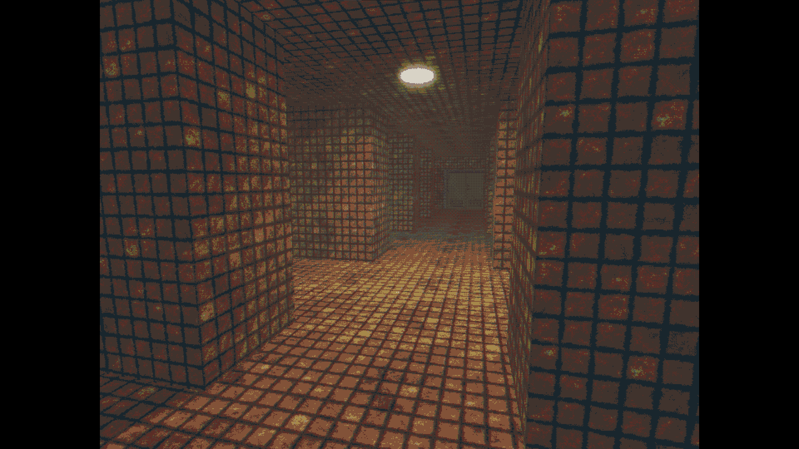
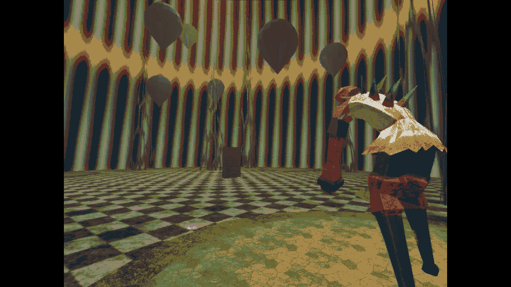
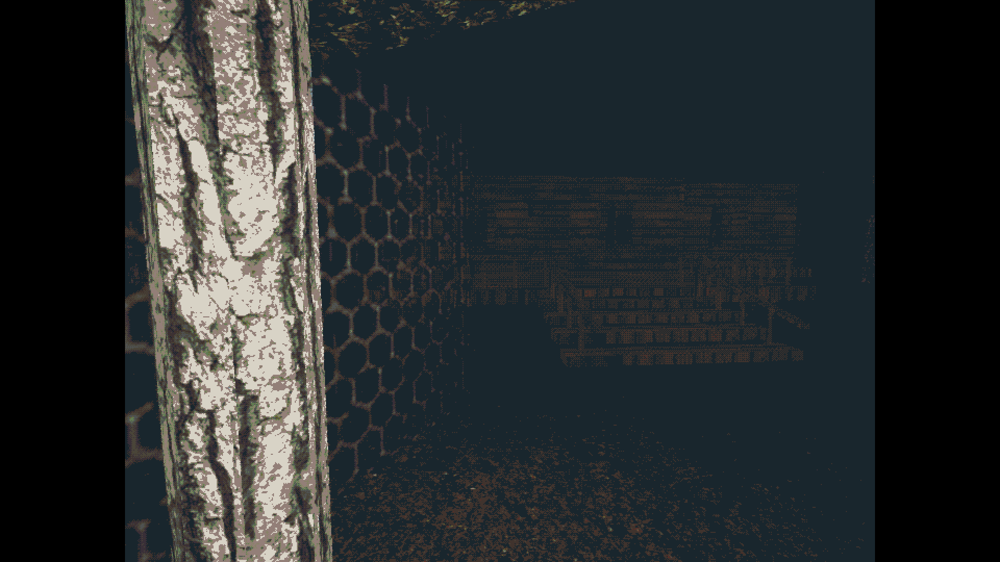
This is a solo game project called “DÓMARI”. I am developing every aspect of this first-person game, from the level design in Trenchbroom to the 3D assets in Blender and textures in Procreate. All the UI design is hand-drawn to reinforce the retro visual identity I love. While I have established the aesthetics and overall feel, I am currently working to expand the narrative and more complex coding aspects. Much like my work on Spirit Hunter, I am pushing older PSX-style graphics into a surreal and eerie horror setting. This is a passion project that I intend to refine and improve on for a long time. This is a project I have wanted to develop for a while and I view it as a breakthrough piece for my portfolio. Because I have full creative and technical control, I am curating the gameplay, level design, and creative direction to be the kind of game I would have been obsessed with and had a poster of in my room as a teenager. I want the experience to be eerie and weird so that the audience wants to know more about the story and my process as a designer. Although the narrative is still being finalized, the goal is to create a surreal experience where the audience feels immersed in the aesthetics and wrapped up in nostalgia of an old horror game.
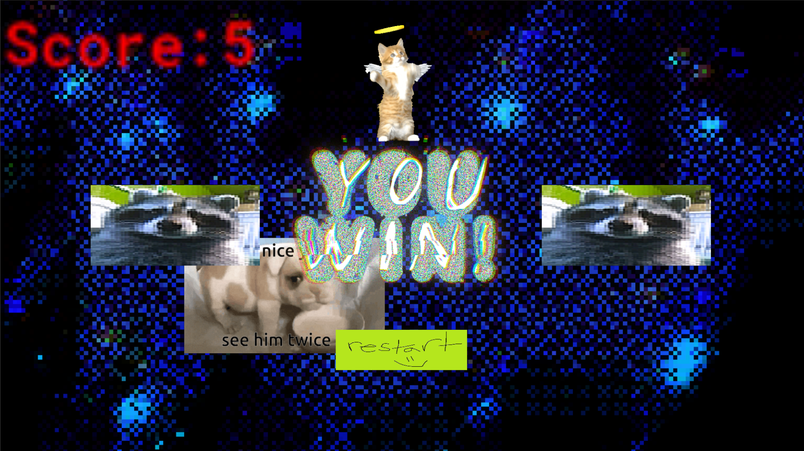
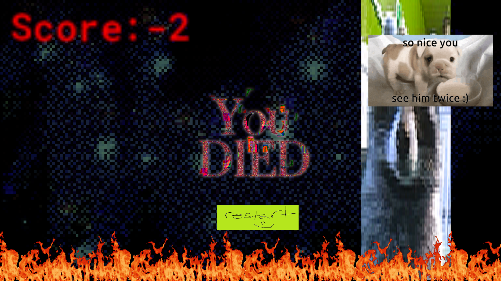
I developed this game in GameMaker using GML to implement all the core logic. It is a platformer where the player must collect gems while avoiding enemies that increase in speed as the levels progress. I created the majority of the assets and incorporated various images to push a sporadic, surreal aesthetic. This involved using GameMaker’s specific framework to ensure the mechanics remained fast paced and the game remained replayable. This was a passion project where I wanted to focus on pushing strange and overstimulating visuals. I was inspired by the aesthetics of games like Cruelty Squad and wanted to create something with captivating, sporadic visuals. This was also a significant learning experience as it was my first time working with GameMaker. It allowed me to get familiar with platformer engines and expand my general development skills. My goal was to provide the audience with an addictive, fun, lighthearted game that tests their reactions and mechanics.
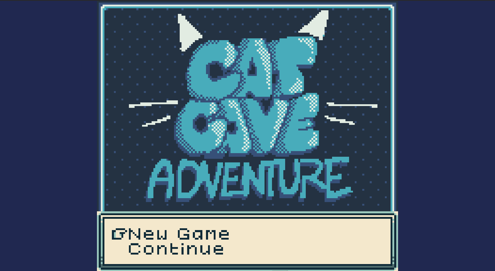
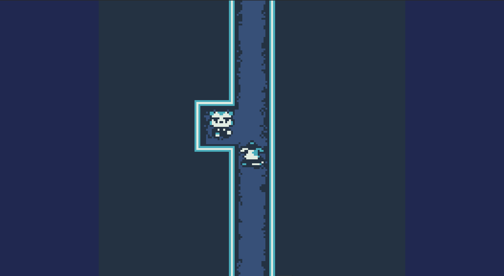
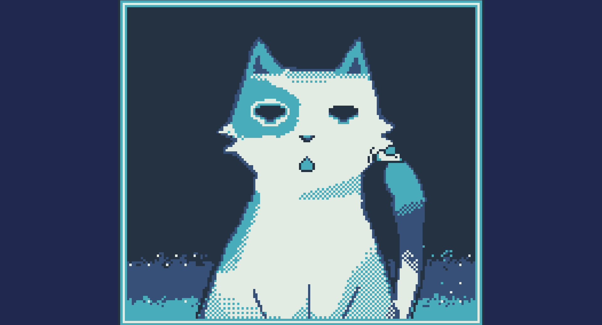
I built this game in GB Studio using the engine's interaction framework to implement movement, scene transitions, and NPC behaviors. I also programmed the dialogue systems and specific mini-game mechanics. I created all the visual assets using Aseprite and Procreate. Working within the technical limitations of a GameBoy engine was a big part of the process in creating this. I had to work with a strict amount of colors and a specific number of unique pixel blocks while designing the gameplay. Learning to navigate and overcome these constraints was a highlight in my development process. I created this game out of a specific interest in GameBoy aesthetics and hardware limitations. Given my focus on retro styles, I decided to create a short narrative involving a celestial cat. I wanted the audience to feel nostalgia for the handheld games of the past while enjoying the wacky aesthetics of the unique characters and dialogue I made. Working with GB Studio was a new experience that allowed me to add a unique tool to my technical arsenal as a developer and artist.